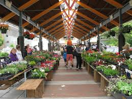
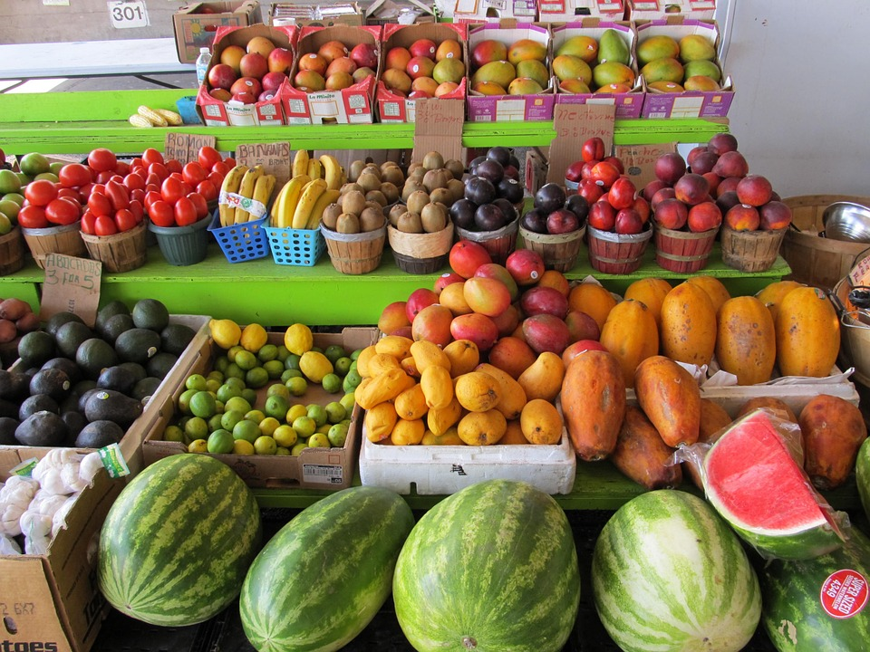
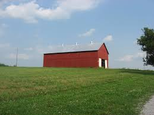
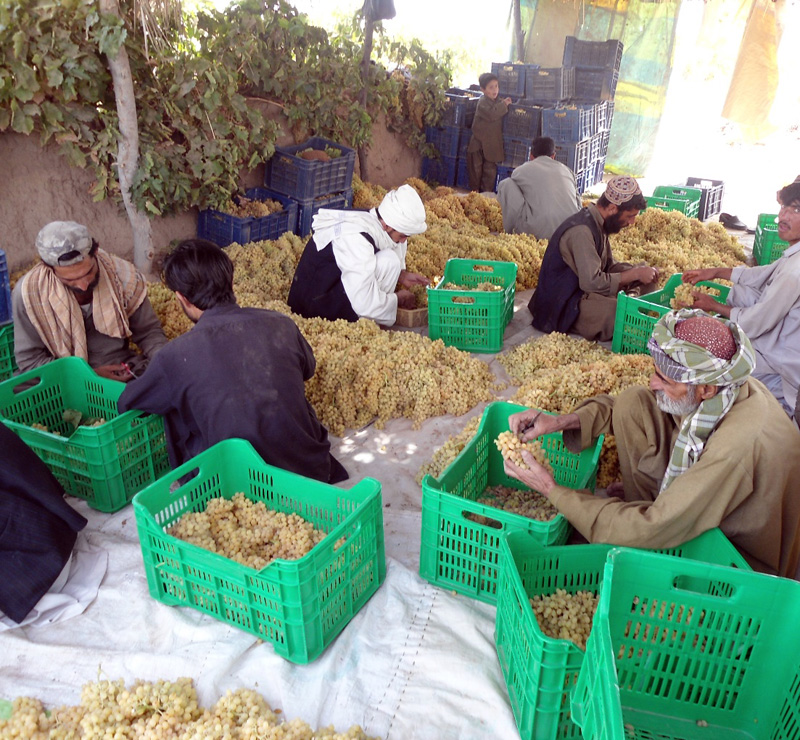
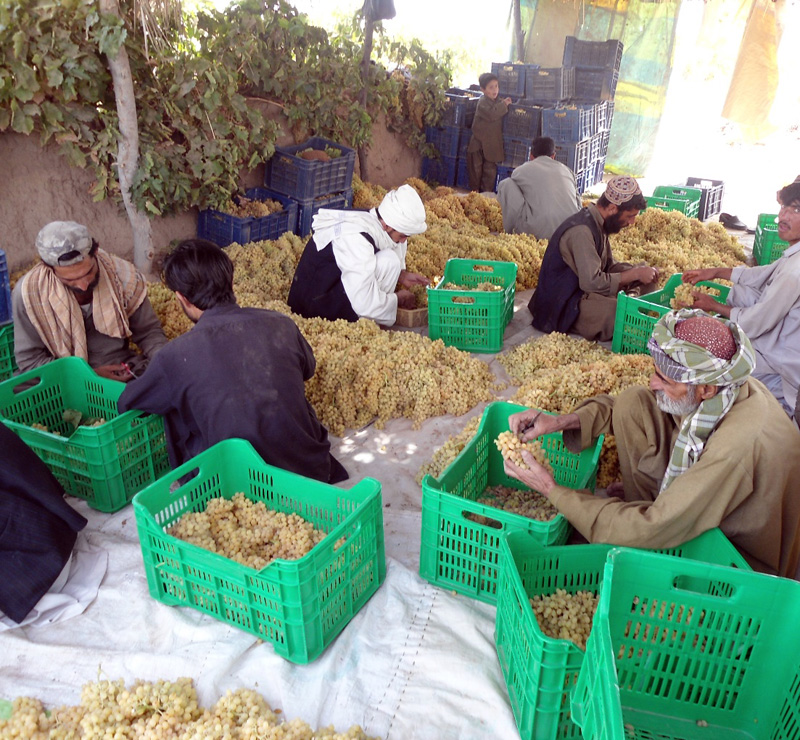
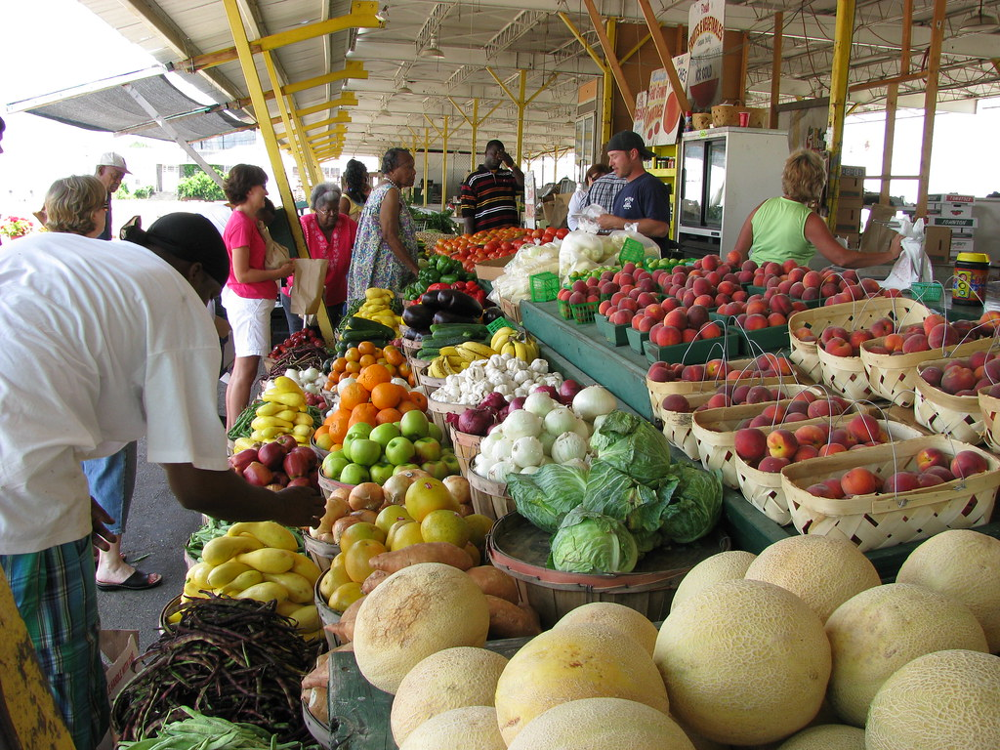

What Is A Local Business?
A local business is typically defined as a company whose food is grown within 100 miles from where they produce is sold. It can also be defined as community-based produce, produce from a specific area (like your state or region), or from sellers you can talk to.
Why Support Local Businesses?
Supporting local businesses, specifically farmers, is beneficial for both you and your community. One of the main benefits of supporting local farmers is the food will be fresher. Most times, food from local markets will have been harvested within the past week. Between harvesting and transporting the food from hundreds to thousands of miles away, food from large supermarket chains will be older by the time it reaches the store. Second, local produce helps the environment. Because the food does not need to be transported from far away, less packaging and less plastic is involved in the sale of local produce. Buying locally also supports your community's economy. When you buy local food, it enables the farmer to keep their livelihood, as well as employ more locals. The money you spend stays in your community, supporting your neighbors.
  
 

Where Can You Find Local Farmers' Markets?
Local farmers' markets can be found all over America. Large cities are home to some of the most well-known and popular markets. Local farmers' markets can be found in each state. However, small markets can be found throughout smaller cities and areas. Typically, farmers' markets are held in large areas, like parks or a designated city block. The hours vary but are often held in the middle of the day a few days (including weekends) a week. This is a farmers' market locator that can find farmers' markets near you.
Other Reasons to Support Locals
- More variety in food - options can include native and organic crops, which may be difficult to find in supermarkets.
- Direct communication - at farmers' markets, you have the opportunity to get to know the farmer and ask questions about the produce before you buy it.
- Save money - many markets allow you to buy their produce in bulk, which saves both money and time.